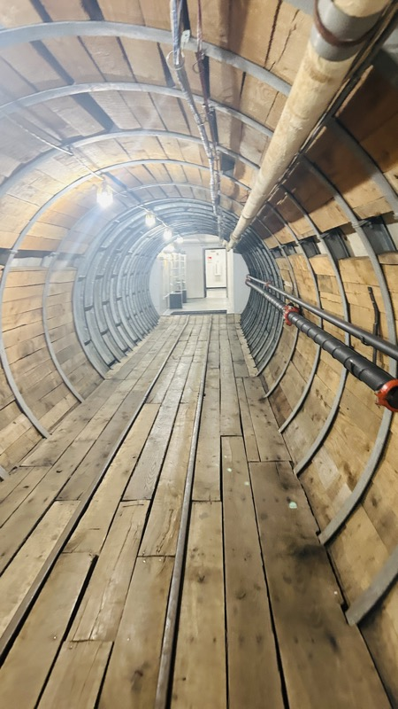

My PhD Research Interest

I'm a PhD student in Underground Construction and Tunnel Engineering at Colorado School of Mines. My research is to develop a discrete event simulation model for predicting TBM (tunnel boring machine) utilization and performance, one part of a larger cloud-based simulation app I'm building for the work.
Alongside the PhD, I've also taught Introduction to Rock Mechanics and Tunnelling as a teaching assistant, and I've previously interned with WSP and ARUP's Tunneling and Underground Space group.
My research focuses on tunnel boring machine (TBM) performance and utilization, with an interest in understanding how geological conditions, machine parameters, construction activities, and operational delays influence tunneling productivity. I'm particularly interested in developing data-driven approaches that can complement traditional empirical and simulation-based methods. My work explores the potential of artificial intelligence and machine learning to build more flexible and practical models for predicting TBM utilization and understanding the factors that affect tunnel construction performance. Ultimately, my goal is to connect engineering knowledge with data-driven tools to support better decision-making in underground construction.
I enjoy working on projects that bring together engineering knowledge, problem-solving, and new ideas. From academic research to practical engineering applications, my projects reflect my interest in understanding complex problems and finding useful ways to approach them.
This site is that same project in miniature: I built it with Claude Code, making the calls on layout, content and tone myself and keeping a decision log of where I overruled it. The point of the course isn't the page you're looking at, it's the judgment behind it.